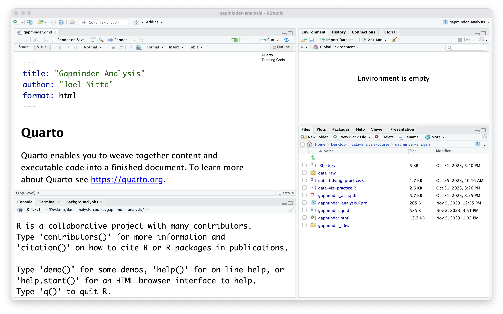
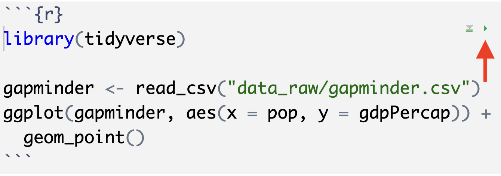

Day 6: Writing documents with Quarto
2023-11-07
What is Quarto?
Quarto is a computer program that allows you to generate documents in various formats with code
We will use it to generate MS Word documents with R
It can also generate PDF, HTML, and other output
It can also use other programming languages like Python
Why use Quarto?
Part of data analysis is communicating your results to an audience
For example, writing a final report for a class, or giving a presentation at work

Why use Quarto?
- Generating a report with code…
- helps you avoid copy-and-paste errors
- ensures that your results are a direct result of the data
- helps you save time by re-using the code later
Installing Quarto
You should have already installed Quarto before class
If not, please go to https://quarto.org/docs/get-started/ and install it now
Reopen your project
We will continue to use the
gapminder-analysisproject in thedata-analysis-coursefolder on your DesktopNavigate there and click on
gapminder-analysis.Rproj
Create a Quarto file
Create a new Quarto file by clicking File > New File > Quarto Document…
In menu that appears, type
"Gapminder Analysis"for the title and your name for the authorLeave format as HTML (as it says, we can change it at any time later)
RStudio will create a file. Save it as
"gapminder-report.qmd"(.qmdis the file extension for Quarto files)

How a Quarto file is set up
Look at your new Quarto file. What do you notice that is different from the
.Rfiles we have been using so far?There is normal text like “Quarto enables you to weave together content…” that does not appear in a comment
There are lines starting with two hashes (
##)There are lines like
```{r}What is going on here?
How a Quarto file is set up
A Quarto (
.qmd) file is set up opposite to an R scriptNormal lines of text are not code (so they don’t need a
#like a comment)R code is contained within lines starting with
```{r}and ending with```(called a “code chunk”)
Rendering
Another important difference between normal
.Rfiles and.qmdfiles is that the latter produce documentsThis is called “rendering”
Let’s try that now: press the “Render” button in RStudio

Rendering
You should see the rendered document (a web page, in this case) appear on the right side of RStudio (in the Files and Plots panel)
- also, in the Files tab, notice the
gapminder-report.htmlfile
- also, in the Files tab, notice the
Notice the formatting of the output: lines like
## Quartoappear as headersYou can also see the output of the code, like
1 + 1

Formatting with Markdown
The
.qmdfile is written in plain text (without formatting, similar to an.Rfile)We can specify formatting in the output using Markdown syntax
- Markdown is a very simple version of HTML
Formatting with Markdown
As you can see in the document, the hash symbol (
#) is used to define headings, which appear larger than other text#Heading level 1 (biggest)##Heading level 2###Heading level 3…
For italics, wrap the text in
*, like this*this*(renders like this)For bold, wrap the text in
**, like this**this**(renders like this)
Formatting with Markdown
.qmdfiles are known as “Quarto Markdown” because they add Quarto’s features (the ability to include code chunks) to MarkdownYou may have heard of “R Markdown,” which is the precursor to Quarto Markdown
- There is generally no reason to use R Markdown instead of Quarto Markdown
- They are very similar, so most things you read about R Markdown will apply to Quarto Markdown
Formatting with Markdown
RStudio has a handy way for you to preview what the rendered text will look like
Right now we are in “Source” mode, which means we are editing the plain text
Click on the “Visual” mode button to switch to “Visual” mode
Now it looks much more like the output on the right
- But notice that we don’t see the results of running the code chunks

Formatting with Markdown
I much prefer working with plain text, so we will switch back to “Source” mode
But it is a good idea to use “Visual” mode to check what your markdown formatting will look like
There are many guides online to learn more about writing Markdown
About the code chunks
- Within the code chunks, anything you type is treated just like an R script
- Normal text must be R code
- Comments can be written with
#
- The idea is to conduct analysis in the code chunks, and directly show the output in the rendered document
Challenge
- Modify the first code chunk to load the
tidyversepackage, then read in thegapminderdataset like we did before
About the code chunks
Notice that when we render the document, the gapminder dataset is not loaded into our current R session
That is because rending takes place in a separate instance of R
To run the R code in a chunk in your current R session, press the green “play” button at the right-hand side of the chunk

In-line code
In addition to code chunks, you can also mix short bits of R code within normal text by first writing a backtick (
`) and the letterr, then the R code, then another backtickFor example, we can show the number of rows in the dataset with
`r nrow(gapminder)`This is best used for describing facts about the data or results
About the YAML header
- The first set of lines at the top of the file are called the “YAML header”
- YAML stands for “Yet Another Markup Language”
- The YAML header specifies settings for the document using variables
- You can set the values of the values of the variables with a colon:
variable: value, for exampleauthor: "Joel Nitta"
- You can set the values of the values of the variables with a colon:
- There are many other settings, but we won’t cover those today
Code chunk options
Similar to the YAML header, we can also specify settings for the code chunks
This is done by first writing
#|, then the setting like you would for the YAML headerFor example, in a report, you usually only want to show the results of the code, not the code itself
You can do this with the following code chunk option:
#| echo: false(rememberechoechoes the code)
Code chunk options
- Other useful code options
message: falseHide code messageswarning: falseHide code warnings
Code chunk options
- Let’s write another code chunk that outputs a plot. Change the chunk options to hide the code.
Change the output format
So far, we have been using HTML output because it is the default and shows up immediately when we press “render”
But your report should be submitted in Word (.docx) format.
Change the output format to
docxand render the document again
Tell git to ignore output
- You should not commit the output of code
- It clutters your git history, and is not necessary since you can always obtain the output by running the code
- You can tell git to ignore files by adding them to
.gitignore:gapminder-report.docxgapminder-report.htmlgapminder-report_files(files needed for HTML output)
Tell git to ignore output
- If you know you want to ignore all docx files, you could instead write this:
*.docx
Summary
Quarto allows you to insert your analysis results directly into reports
Quarto can generate multiple output formats
The way of writing code and plain text is reversed compared to R scripts
Please try to use Quarto for your class reports!
Final Project
Project Description
- The final project is to analyze a dataset, including at least two graphs
- Use Quarto to write the report (by 11/21)
- Present your analysis to the class (on 11/21)
- There will be time in class next week to work on the report (but you are expected to work on it outside of class as well)
Example Repo
I have created an example report for you using the gapminder dataset: https://github.com/data-analysis-chiba-2023/gapminder-report
You can look at the
.qmdfile online, or clone the repo to your computer
Dataset
- You will choose a dataset from the Tidy Tuesday project to analyze
- Tidy Tuesday releases a dataset once a week to practice data analysis
Dataset
- I have already pre-selected 5 datasets for you
Team Setup
- You will work in teams of 4 people each
- I have already assigned everybody to teams
- Please sit with members of your team and choose a dataset (you can choose a new team name if you want)
Working as a team
Clone the project on GitHub by clicking on the link in Moodle
Be sure to enter your team name correctly! (pay attention to lower and upper case)
This time, all team members have access to the same repository
Editing the template
- There is some text in the
report.qmdfile. Edit it to match your dataset and team members.- Delete the lines about the other datasets
- Delete the questions and add your text
Working as a team
To avoid merge conflicts (incompatible changes to the same file made by different people) make a copy of the final report file for each team member to work on.
- For example,
report-jn.Qmd
- For example,
Share your work by pushing and pulling
When you are ready to submit the final report, one person should edit the final report file
report.QmdAlso submit the repo URL on Moodle as usual
Due dates
The report (
report.qmd) is due 2023-11-20 11:59 PMThe presentation will be given in class on 2023-11-21
Evaluation Sheets
- You will evaluate (score) each other team’s presentation in class on 2023-11-21
- Turn in Form A (hardcopy) at the end of the class
- You will evaluate the contributions of each of your team members after class (due by 2023-11-21 11:59 PM)
- Turn in Form B (digital) on Moodle